0 1 2
0 1 3.885 1.650
1 1 1.005 2.745
2 1 1.734 0.716
3 1 1.605 2.549
4 1 1.530 2.950
.. .. ... ...
85 3 1.056 -2.227
86 3 1.055 -2.333
87 3 1.436 -2.944
88 3 1.206 -2.149
89 3 0.974 -1.496
[90 rows x 3 columns]
$$
%%% 演算子
%%% 線型代数学%%% 複素解析学 %%% 集合と位相
%%% 形式言語理論 %%% Graph Theory
%%% 多様体 %%% 代数 %%% 代数的位相幾何学 %%% 微分幾何学 %%% 函数解析 %%% 積分論%%% Fourier解析 %%% 数値解析
%%% 確率論%%% 情報理論 %%% 量子論 %%% 最適化 %%% 数理ファイナンス
%%% 偏微分方程式 %%% 常微分方程式 %%% 統計力学 %%% 解析力学
%%% 統計的因果推論 %%% 応用統計学 %%% 数理統計%%% 計量経済学
%%% 無限次元統計模型の理論%%% Banach Lattices
%%% 圏 %代数の圏 %Metric space & Contraction maps %確率空間とMarkov核の圏 %Sober space & continuous map %Category of open subsets %Category of sheave %Category of presheave, PSh(C)=[C^op,set]のこと %Convergence spaceの圏 %一様空間と一様連続写像の圏 %フレームとフレームの射 %その反対圏 %滑らかな多様体の圏 %Quiverの圏
%%% SMC %%% 括弧類%%% 予約語
%%% 略記
%%% 矢印類 $$
本稿では，\(K\)-平均アルゴリズム によるクラスタリングの考え方と問題点を，Python による実演を通じてみる．次の 稿 で，\(K\)-平均アルゴリズムの統計モデリングの観点からの一般化である EM アルゴリズム を説明し，その問題点の数理的な理解を目指す．
より図が見やすい PDF 版は こちら．
1 用いるデータ
次のような２次元のデータ（＋最左列に教師データ付き）を考える．

2 ハード \(K\)-平均法
head \(K\)-means algorithm はデータ \(\{x^{(n)}\}_{n=1}^N\subset\mathbb{R}^I\) とクラスタ数 \(K\in\mathbb{N}^+\)，そして初期クラスター中心 \((m^{(k)})_{k=1}^K\in(\mathbb{R}^I)^K\) の３組をパラメータに持つ．
soft \(K\)-means algorithm はさらに硬度パラメータ \(\beta\in\mathbb{R}_+\) を持つ．
特に numpy の提供する行列積を利用して，これを Python により実装した例を以下に示す．
ソフト \(K\)-平均法の実装と対比できるように，負担率を通じた実装を意識した例である．
アノテーションを付してあるので，該当箇所（右端の丸囲み数字）をクリックすることで適宜解説が読めるようになっている．
def hkmeans_2d(data, K, init, max_iter=100):
"""
２次元データに対するハード K-平均法の実装例．
Parameters:
- data: (N,2)-numpy.ndarray
- K: int クラスター数
- init: (2,K)-numpy.ndarray 初期値
Returns:
- clusters: (N,)-numpy.ndarray クラスター番号
"""
N = data.shape[0]
I = data.shape[1]
m = init
r = np.zeros((K, N), dtype=float)
for _ in range(max_iter):
# Assignment Step
for i in range(N):
distances = np.array([d(data[i], m[:,k]) for k in range(K)])
k_hat = np.argmin(distances)
r[:,i] = 0
r[k_hat,i] = 1
# Update Step
new_m = np.zeros_like(m, dtype=float)
numerator = np.dot(r, data)
denominator = np.sum(r, axis=1)
for k in range(K):
if denominator[k] > 0:
new_m[:,k] = numerator[k] / denominator[k]
else:
new_m[:,k] = m[:,k]
if np.allclose(m, new_m):
break
m = new_m
return np.argmax(r, axis=0)- 1
- データ数を取得している．
- 2
- データの次元を取得している．今回はすべて２次元データを用いる．
- 3
- クラスター中心に引数として受け取った初期値を代入. \(2×K\)-行列であることに注意．
- 4
-
負担率を \(K×N\)-行列として格納している．その理由は後ほど行列積を通じた計算を行うためである．
dtype=floatの理由は後述． - 5
-
この
distances変数は(K,)-numpy.ndarrayになる．すなわち，第 \(k\) 成分が，第 \(k\) クラスター中心との距離となっているようなベクトルである．ただし，dは Euclid 距離を計算する関数として定義済みとした． - 6
- 距離が最小となるクラスター番号 \(\hat{k}:=[\mathop{\mathrm{arg\,min}}_{k\in[K]}d(m_k,x_i)]\) を，\(i\in[N]\) 番目のデータについて求める．
- 7
- \(\hat{k}\) に基づいて負担率を更新するが，ループ内で前回の結果をリセットする必要があることに注意．
- 8
-
ここで
dtype=floatと指定しないと，初め引数initが整数のみで構成されていた場合に，Python の自動型付機能がint型だと判定し，クラスター中心mの値が整数に限られてしまう．すると，アルゴリズムがすぐに手頃な格子点に収束してしまう． - 9
-
numpyの行列積を計算する関数np.dotを使用している．更新式 \[ m^{(k)}\gets\frac{\sum_{n=1}^Nr^{(n)}_kx^{(n)}}{\sum_{n=1}^Nr^{(n)}_k} \] の分子を行列積と見たのである． - 10
-
分母 (denominator) は \((K,N)\)-行列
rの行和として得られる． - 11
- ゼロによる除算が起こらないように場合わけをしている．
- 12
- クラスター中心がもはや変わらない場合はアルゴリズムを終了する．
- 13
-
負担率の最も大きいクラスター番号を返す．今回は
hat_kの列をそのまま返せば良いが，soft \(K\)-means アルゴリズムにも通じる形で実装した．
2.1 正解率の観察
次の２つの初期値を与えてみる． \[ m_1:=\begin{pmatrix}4\\0\end{pmatrix},\quad m_2:=\begin{pmatrix}1\\4\end{pmatrix},\quad m_3=\begin{pmatrix}-1\\1\end{pmatrix}, \] と，\(m_2,m_3\) は変えずに \(m_1\) の \(y\)-座標を \(1\) だけ下げたもの \[ m_1':=\begin{pmatrix}4\\-1\end{pmatrix} \] とを初期値として与えてみる．
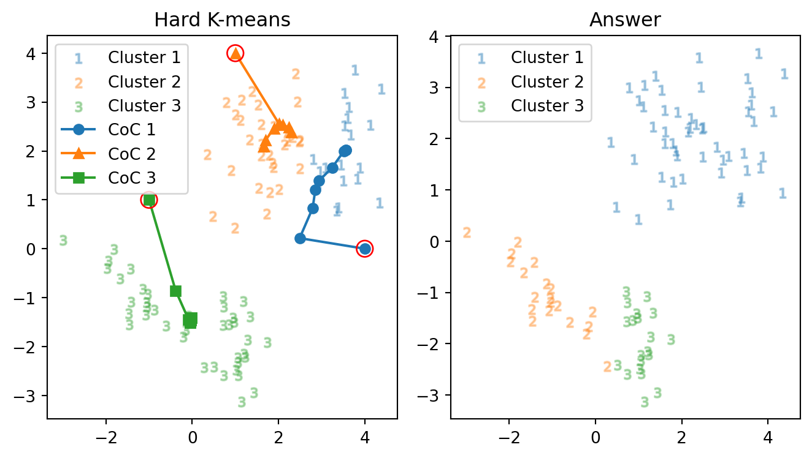
正解数: 39 正解率: 43.3 % 反復数: 9 回別の初期値を与えてみる（右下の点 \(m_1\) を \(1\) だけ下に下げただけ）： \[ \begin{pmatrix}4\\0\end{pmatrix}=m_1\mapsto m_1':=\begin{pmatrix}4\\-1\end{pmatrix} \]
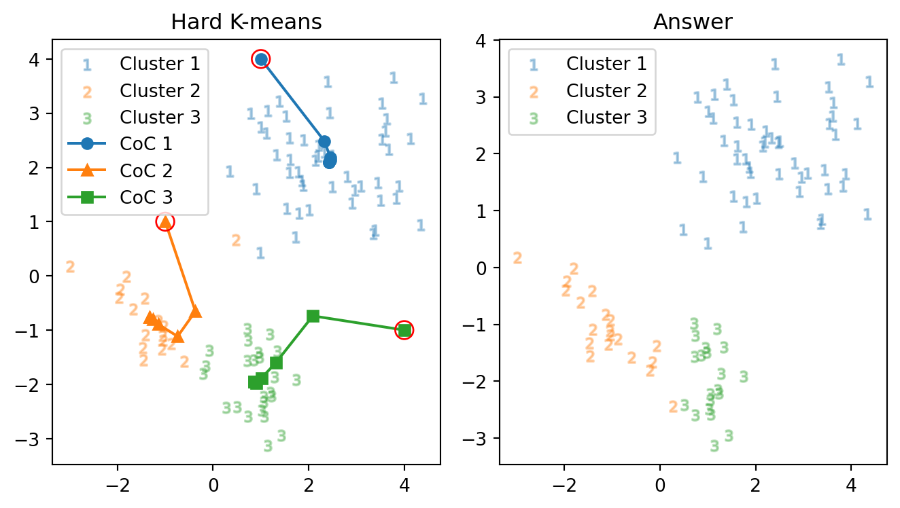
正解数: 85 正解率: 94.4 % 反復数: 7 回結果が全く変わり，\((m_1',m_2,m_3)\) を与えた方が，大きく正解に近づいている．具体的には，右下の初期値 \(m_1\) は右上の島に行くが，\(m_1'\) は左下の島に行ってくれる．
ハード \(K\)-平均アルゴリズムは初期値に敏感である ことがよく分かる．
2.2 正解率を上げる試み
直前の結果ではクラスター２と３の境界線で４つのミスを犯しており，これを修正できないか試したい．
そこで，答えに近いように， \[ m_1\gets\begin{pmatrix}2.5\\2\end{pmatrix},\;\; m_2\gets\begin{pmatrix}-1\\-1\end{pmatrix},\;\; m_3\gets\begin{pmatrix}1\\-2\end{pmatrix}, \] を初期値として与えてみて，正答率の変化を観察する．
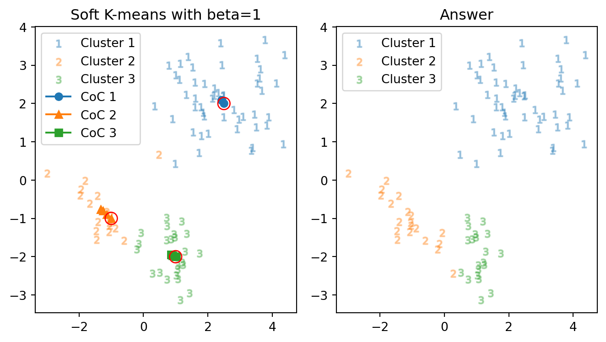
正解数: 85 正解率: 94.4 % 反復数: 5 回もはや初期値から殆ど動いていないが，目標のクラスター３に分類された３つの点が，相変わらず３のままであり，加えてクラスター２の中心がこれらから逃げているようにも見えるので，クラスター２の初期値をよりクラスター３に近いように誘導し，クラスター３の中心をより右側から開始する：
\[ m_2:\begin{pmatrix}-1\\-1\end{pmatrix}\mapsto\begin{pmatrix}0\\-2\end{pmatrix}\;\; m_3:\begin{pmatrix}1\\-2\end{pmatrix}\mapsto\begin{pmatrix}2\\-2\end{pmatrix} \]
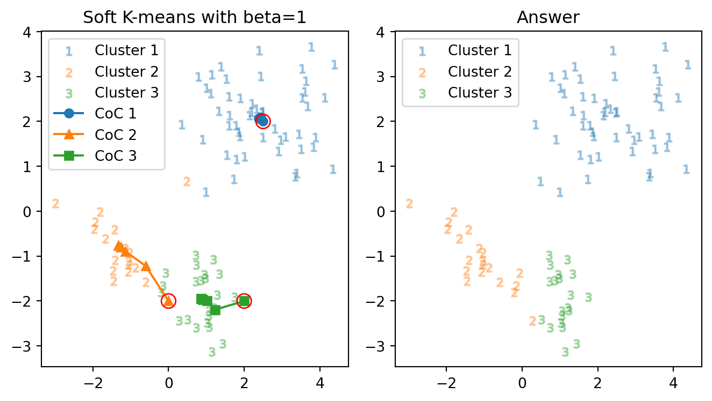
正解数: 85 正解率: 94.4 % 反復数: 6 回こんなに誘導をしても，正しく分類してくれない．
実は，以上２つの初期値では，最終的に３つのクラスター中心は同じ値に収束している．よって，これ以上どのように初期値を変更しても，正答率は上がらないシナリオが考えられる．
以上の観察から，ハード \(K\)-平均法はある種の 局所解に収束する ようなアルゴリズムであると考えられる．
3 ソフト \(K\)-平均法
ハード \(K\)-平均法では，負担率 \[ r_{kn}\gets\delta_{k}(\mathop{\mathrm{arg\,max}}_{i\in[k]}d(m_i,x_n)) \] は \(0,1\) のいずれかの値しか取らなかった．この振る舞いを， \[ \sigma(z;e)_i:=\frac{e^{z_i}}{\sum_{j=1}^Ke^{e_j}}\quad(i\in[K]) \] で定まる ソフトマックス関数 \(\sigma:\mathbb{R}^K\to(0,1)^K\) を用いて，「軟化」する．
ここでは，\(\beta\ge0\) として， \[ \sigma(z;e^{-\beta})_i=\frac{e^{-\beta z_i}}{\sum_{j=1}^Ke^{-\beta e_j}} \] の形で用い，\(\mathop{\mathrm{arg\,max}}\) の代わりに \[ \begin{align*} r_{kn}&\gets\sigma(d(-,x_n)\circ m;e^{-\beta})_k\\ &=\frac{e^{-\beta d(m_k,x_n)}}{\sum_{j=1}^K e^{-\beta d(m_j,x_n)}} \end{align*} \] とする．
\(\beta\) は 硬度 (stiffness) または逆温度と呼ぶ．1 \(\beta=0\) のときは温度が無限大の場合にあたり，常に負担率は一様になる．絶対零度に当たる \(\beta\to\infty\) の極限が hard \(K\)-means アルゴリズムに相当する．
実装は例えば hard \(K\)-means アルゴリズム（ 節 2 ）から，負担率計算の部分のみを変更すれば良い：
for i in range(N):
distances = np.array([d(data[i], m[:,k]) for k in range(K)])
denominator_ = np.sum(np.exp(-beta * distances))
r[:,i] = np.exp(-beta * distances) / denominator_- 1
-
データ \(x_i\) とクラスター中心 \((m_k)_{k=1}^K\) との距離を計算し，ベクトル \((d(x_n,m_k))_{k=1}^K\) を
distancesに格納している． - 2
-
負担率の計算 \[
r_{ik}=\frac{\exp(-\beta d(m_k,x_i))}{\sum_{j=1}^K\exp(-\beta d(m_j,x_i))}
\] を２段階に分けて行なっており，分母を先に計算して変数
denominator_に格納している． - 3
-
すでに計算してある分母
denominator_を用いてデータ \(x_i\) の負担率 \((r_{ki})_{k=1}^K\) を計算し，\((K,N)\)-行列rの各列に格納している．
3.1 正解率の観察
逆温度をひとまず \(\beta=1\) としてみる．図 1 と全く同様な初期値 \[ m_1:=\begin{pmatrix}4\\0\end{pmatrix},\quad m_2:=\begin{pmatrix}1\\4\end{pmatrix},\quad m_3=\begin{pmatrix}-1\\1\end{pmatrix}, \] を与えてみると，次の通りの結果を得る：
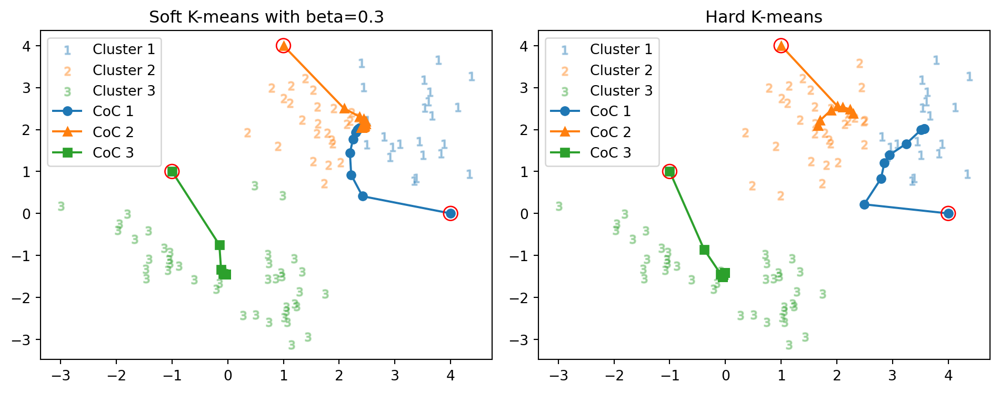
正解数: 49 vs. 39 正解率: 54.4 % vs. 43.3 % 反復数: 65 回 vs. 9 回正解率 43.3% であったところから少し改善している．さらに，反復数が９回であったところから，劇的に増えている（65回）．
また，右上の２つのクラスター中心の収束先は，微妙にずれているが ほとんど一致している 点も注目に値する．
図 2 で与えた初期値 \((m_1',m_2,m_3)\) も与えてみる．
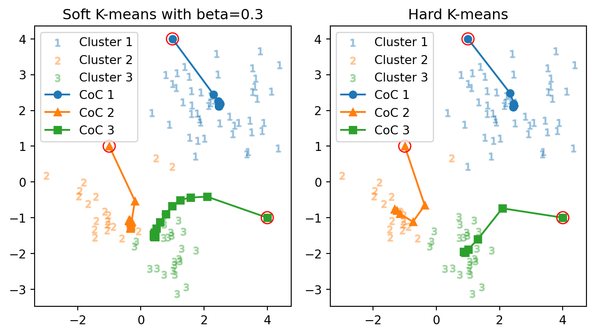
正解数: 87 vs. 85 正解率: 96.7 % vs. 94.4 % 反復数: 101 回 vs. 7 回正答率は 94.4% からやはり少し改善しており，反復数が７回から大きく増えている．
結果はやはり 図 3 とは大きく異なっており，ハード \(K\)-平均法で観察された初期値鋭敏性が，変わらず残っている．
加えてこの場合も 図 3 のクラスター１と２と同様に，クラスター２と３の中心がほぼ一致している．
\(\beta=1\) の場合のソフト \(K\)-平均法は，この例では クラスター中心が融合する傾向にある ようである．
一般に，\(\beta\) が小さく，温度が大きいほど，エネルギーランドスケープに極小点が少なくなり，クラスターは同じ場所へ収束しやすくなると予想される．
3.2 硬度パラメータに依る挙動の変化
初期値を直前で用いた \[ m_1\gets\begin{pmatrix}4\\-1\end{pmatrix},\quad m_2\gets\begin{pmatrix}1\\4\end{pmatrix},\quad m_3\gets\begin{pmatrix}-1\\1\end{pmatrix}, \] で固定とし，さらに温度を上げて，逆温度を \(\beta=0.1\) としてみる．
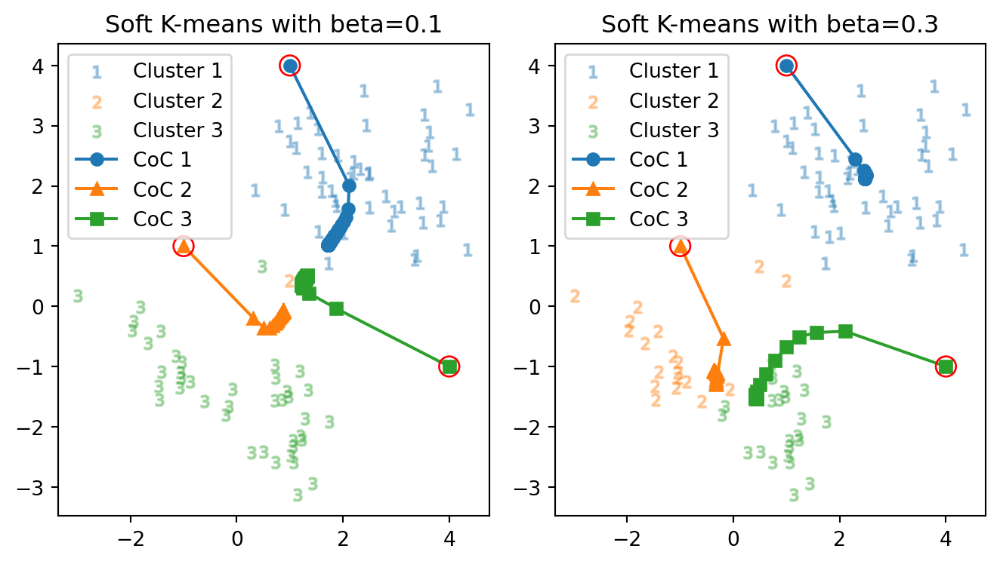
正解数: 68 vs. 87 正解率: 75.6 % vs. 96.7 % 反復数: 10 回 vs. 101 回反復数は減少し，全てがほとんど同じクラスターに属する結果となってしまった．
３つのクラスター中心の座標が小数点以下５桁の精度で一致してしまっている．
温度が大変に高い状態では，全てが乱雑で，３つのクラスターが一様・公平に負担率を持つようになった．そのため，第一歩からほとんど全体の中心へと移動し，反復数が減る．
加えて，関数 argmax が全てのデータ \(x_n\) に対してほとんど \(k\in[K]\) を返してしまっているのである．
次に，温度を少し下げて，逆温度を \(\beta=10\) としてみる．
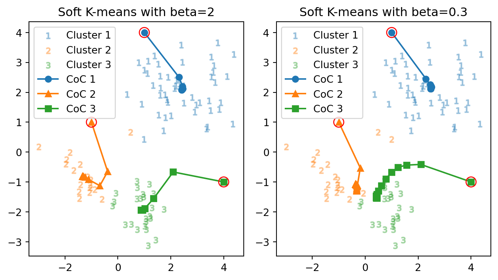
正解数: 85 vs. 87 正解率: 94.4 % vs. 96.7 % 反復数: 18 回 vs. 101 回初めて soft \(K\)-means アルゴリズムを用いた場合で，３つのクラスター中心がはっきりと別れた．反復回数は，\(\beta=1\) の場合と比べればやはり落ち着いている．
しかし，正解率は head \(K\)-means の場合（ 図 2 など）と全く同じである．実は，最終的なクラスター中心も 図 2 の最終的なクラスター中心とほとんど同じになっている．
以上より，ソフト \(K\)-平均法は温度を上げるほどクラスター数が少なくなり，温度を下げるほどクラスター数は上がり，十分に温度を下げるとハード \(K\)-平均法に挙動が似通う．
3.3 最適な硬度の選択
\(\beta=1\) ではクラスターが２つに縮退し，\(\beta=10\) では hard \(K\)-means アルゴリズムの結果とほとんど変わらなくなった．そこで，この中間の値での挙動の変化を調べる．
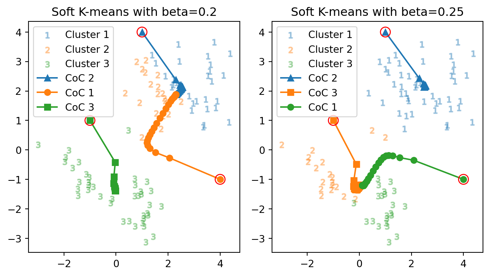
正解数: 87 vs. 85
正解率: 96.7 % vs. 94.4 %
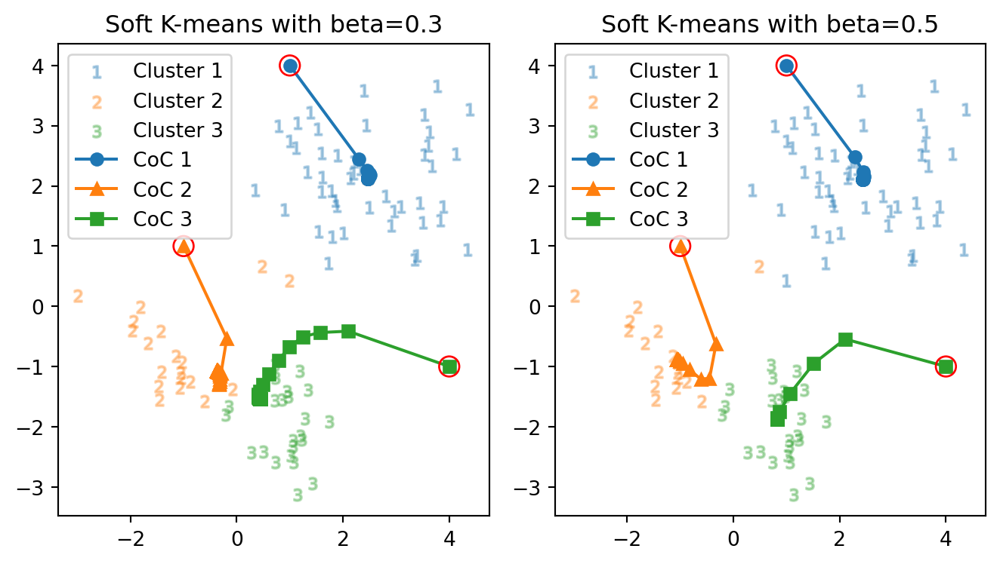
正解数: 84 vs. 85
正解率: 93.3 % vs. 94.4 %クラスター２と３の中心が，温度の低下と共に徐々に離れていくことが観察できる．やはり，温度が高い場合はクラスター中心が合流・融合してしまいやすいが，冷却することでクラスター数は大きい状態で安定する．
4 別のデータセットを使った場合
4.1 データの概観
今度は，次の４クラスのデータを用いる．
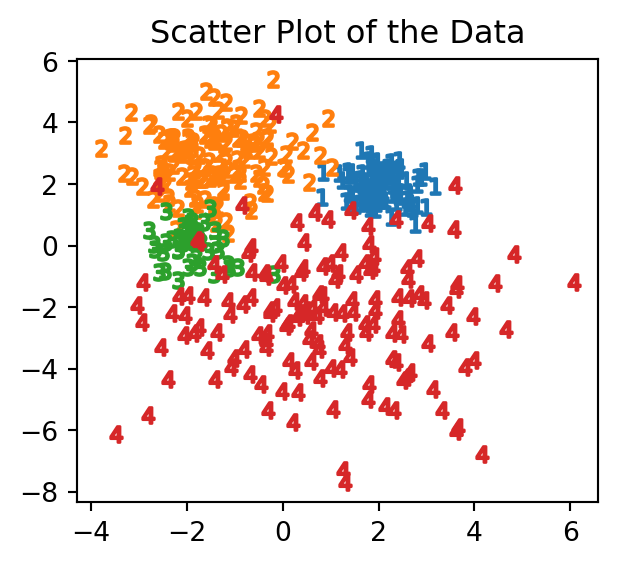
4.2 結果一覧
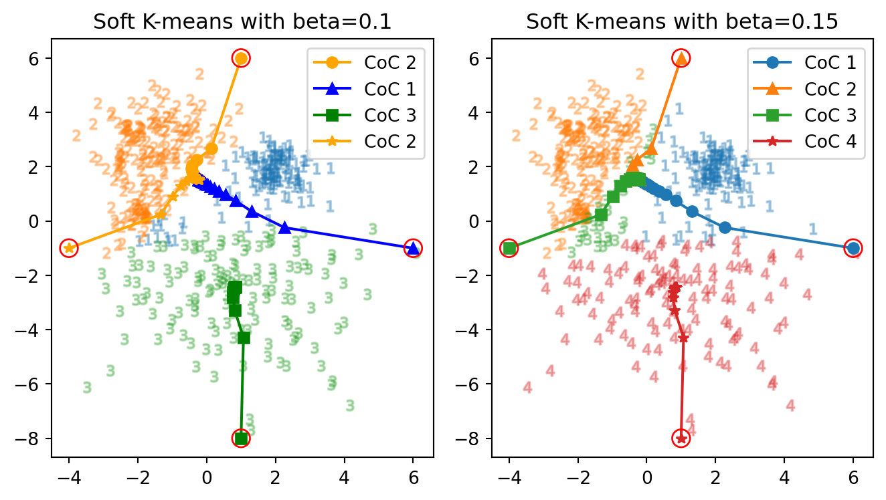
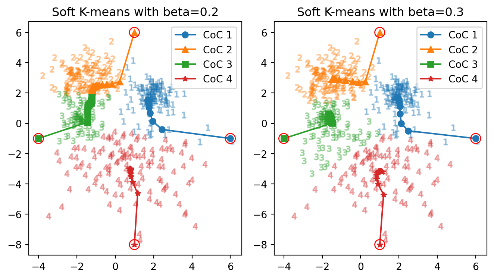
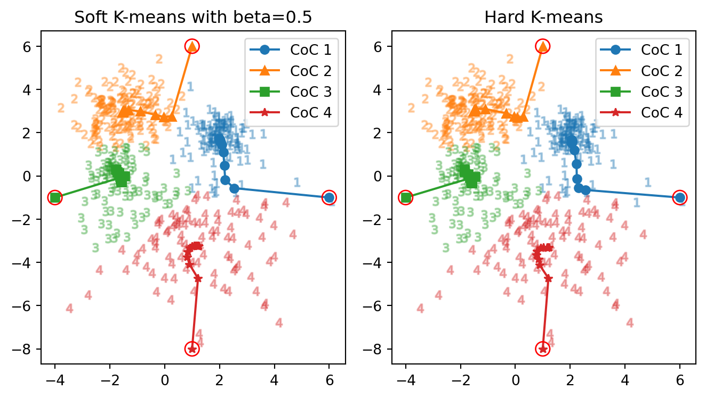
正解数: 88 vs. 385 正解率: 19.6 % vs. 85.6 % 反復数: 101 回 vs. 59 回
正解数: 379 vs. 380 正解率: 84.2 % vs. 84.4 % 反復数: 47 回 vs. 40 回
正解数: 378 vs. 378 正解率: 84.0 % vs. 84.0 % 反復数: 29 回 vs. 14 回5 まとめ
こうしてソフト \(K\)-平均法とハード \(K\)-平均法の性質は分かった．主に
- 初期値依存性
- クラスタ数 \(K\) の選択法
の問題が未解決であり，恣意性が残る．
誰がどう使ってもうまくいくようなアルゴリズムであると言うことは出来ない．
References
MacKay, D. J. C. (2003). Information theory, inference and learning algorithms. Cambridge University Press. https://www.cambridge.org/gb/universitypress/subjects/computer-science/pattern-recognition-and-machine-learning/information-theory-inference-and-learning-algorithms?format=HB&isbn=9780521642989
Footnotes
stiffness の用語は (MacKay, 2003, p. 289) から．↩︎